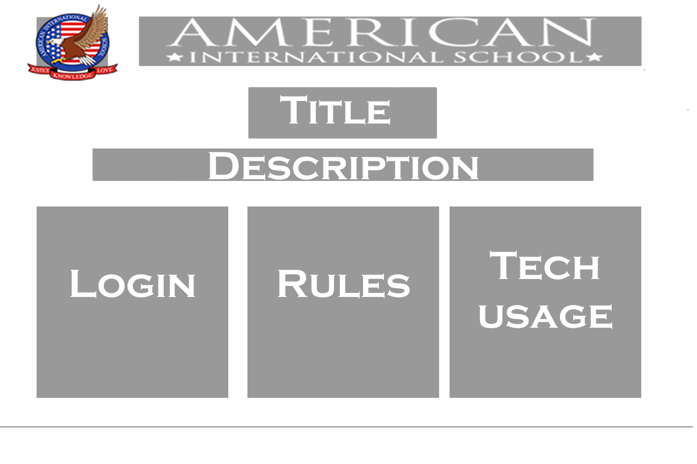

Homepage creation
Hi-fi wireframes:

1. Drop-down bar with video being the "Call to action"

2. Menu and video side by side

3. Intro and Menu show up first, video pops up later

4. Intro and huge menu in the center of the website
Hi-fi wireframe of chosen design:

Feedback from chosen wireframe:
- Layout is neat but should include buttons that address most common problems e.g. changing the login password
- Likes the idea of minimalistic but not sure if would appeal to middle school students
Storyboard:

Homepages
The strengths of using Fireworks
- Different layers can be hid, locked for easy editing
- Prototyping: can slice different sections up as seen on a website
- Can crop/resize/edit images on the same software
- Better optimized images
The strengths of using Dreamweaver
- Allows users to drag images directly from the list of files in the folder on the side
- Can change CSS altogether as a class/tag/div
- Semi-automatically writes codes for you
- Editable code on the side - Split screen mode
Research:
Reference website on layout: Calimex
Layout
Java Scripts:
Spinning ray http://davidwalsh.name/css-spin-revisited
Whilst designing ...
Contrast
Repetition
Alignment
Proximity/Pattern
Summary of 2nd client meeting:
We met with Ms Smith and she liked the general direction of our website's purpose/layout.
We showed her 2 sites - one as a template (AIS-themed), which could be up and running; another being
more engaging (Superhero-themed) but still needs a lot more editing.
However, she felt that it was important to gather the information we would put onto the site.
Revision
Ideas on super hero prototype:
- Cursor: superhero-related
- How to login --> Collect your wifiman gear
- Rules and Regulations --> The Wifiman handbook
-